← 返回阅读库 · 原论文目录
论文讲解阅读文档 · 表征学习 · v194
Generative Modeling by Estimating Gradients of the Data Dist[1907.05600]
视频时长 00:17:51；讲解文字 7,439 字符；提取讲解画面 43 张。按视频原顺序阅读，每段文字保留时间戳。
文字来自整段视频的自动语音转写，按自然停顿分段，并与 PPT / 论文页面 / 演示画面对齐。未将讲解压缩为摘要；术语、数字和口述公式请结合画面及原论文核对。 阅读稿已校正规范部分明确术语误识别；原始逐字稿和每处修改记录另行保留。
讲解画面为源视频截图（640×360），不是可编辑 PPT 文件。全片按每秒 2 帧扫描内容变化，逐步展开页保留；连续动画保留代表画面。清晰度受源视频限制。
下载完整资料包 · 含离线 HTML、PDF、Word、全部 PPT 画面和字幕。
原论文与材料
Generative Modeling by Estimating Gradients of the Data Distribution · 下载完整 PDF（23 页）
按时间阅读
00:00:00–00:00:31 · 画面 001
 00:00:00–00:00:31 · 画面 001
00:00:00–00:00:31 · 画面 001大家好,今天我们来快速说一篇论文 Generative Modeling by Estimating Gradients of the Data Distribution，这一篇就是我们之前提到的 Score-Based Method。那么如果你真的需要做这方面研究，你肯定是在我之前已经看过这篇文章了。这是一个很有代表性的工作，同时网上的资料也已经非常详尽了，各种各样的版本解释。
对这个文章解析的已经非常详细了。那么这个视频呢，主要还是我在读这篇文章的时候一个简单的整理。那么首先一个 intuition 就是，我们需要一个什么样的 generating model？那最简单的一个描述呢，就是说我这个模型生成出来的样本，它的这个数据的分布，它应该跟我们实际的这个样本这个 distribution 相吻合。那么这个东西说起来容易啊，但实际做起来你想。
00:00:31–00:02:31 · 画面 002
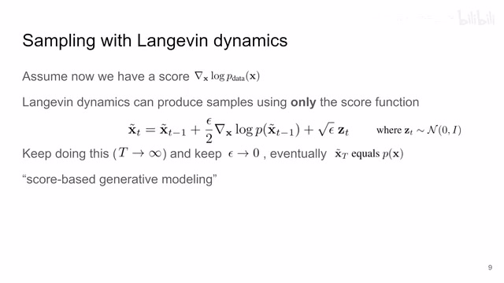
00:00:31–00:02:31 · 画面 002你的这个比如说拿图像生成来说，那我们真实采到的图像它组成的各种 distribution 也是非常复杂的，你不能说用一个很简单直接的方法去给它描述出来，就是处于一种盲人摸象的状态。但是呢，我们有一些工具能够帮助我们在不知道整个这个大的这个 distribution 的这个情况下，依然能够去研究这个 distribution 的一些特性，能够产生跟这个 distribution 相似的这样一些样本。
那么这里面有一个方法呢，就是这个 Langevin dynamics，就是朗之万动力学啊。那么它呢，可以帮助我们在不知道整个 distribution 的情况下，你看到这个式子它需要什么呢？那么它只需要在当前这个位置上的这个 distribution 的密度的 log 的导数。那么有了这样一个东西，借助下面这个式子，它可以帮助我们从一个随机的 uniform 的比如说这样一个噪声，逐渐的去生成一个样本，使这个样本呢符合我们最终的这个 data distribution。
这其中呢，我们只依赖于这个 score function。这个 score function 呢，就是我们之前提到的这个 distribution 在当前这个位置它的密度的 log 的导数。那么这个东西其实跟梯度下降很像，那这个梯度呢就告诉你应该朝哪个方向优化。那么在这个情况下呢，就相当于告诉你，你想要去一个 data distribution 它的 density 比较高的地方对不对，你应该往哪个方向走，这就是规定的意义。
那么你还是跟梯度下降一样对吧，你在这个规定的指导下不断的带着有一点随机性的这样一步一步的迭代下去，那么最终呢，你就会走到一个这个 density 比较高的地方。也就是说你生成的样本呢是符合我们原来的 data distribution 的，是一个好的结果。
00:02:31–00:02:39 · 画面 003
00:02:31–00:02:39 · 画面 003那么基于这样一种逻辑的方法呢，就叫做这个 score based generative modeling。那么在理论上有了这么一个好东西之后呢，我们就可以开始去着手真正的去估计这个 score 了对吧，就是我们真正的去计算这个东西了。那现在这个时代对吧，你想估计一个方式怎么办？那最简单的方法就是你训练一个网络对吧，这里叫做 S Theta。
00:02:39–00:03:02 · 画面 004
00:02:39–00:03:02 · 画面 004让它去不断的接近这个方式就好了吗？最简单的方法 MSE 对吧，这个 loss 一加那就好了。那么之前有研究表明呢，这样一种 loss 的形式呢，等效于下面的这个式子加上一个常数。那么这个东西呢，就是这个网络的这个加克比矩阵啊，然后这个呢就是矩阵的 G 嘛。那具体为什么等效呢，你可以看到这篇论文。
00:03:02–00:03:03 · 画面 005
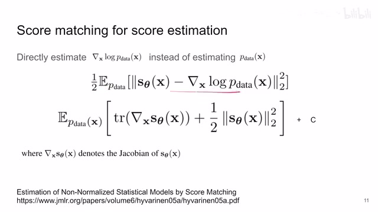
00:03:02–00:03:03 · 画面 00500:03:03–00:03:09 · 画面 006
00:03:03–00:03:09 · 画面 00600:03:09–00:03:10 · 画面 007
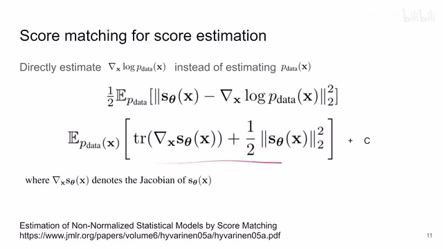
00:03:09–00:03:10 · 画面 00700:03:10–00:03:17 · 画面 008
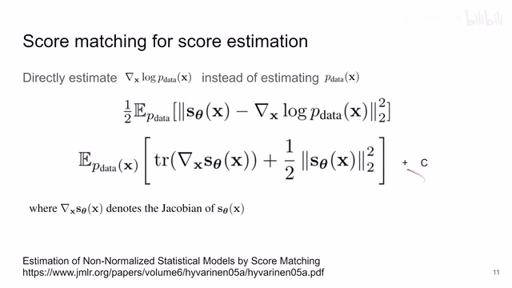
00:03:10–00:03:17 · 画面 00800:03:17–00:03:18 · 画面 009
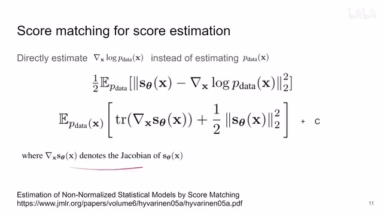
00:03:17–00:03:18 · 画面 00900:03:18–00:03:39 · 画面 010
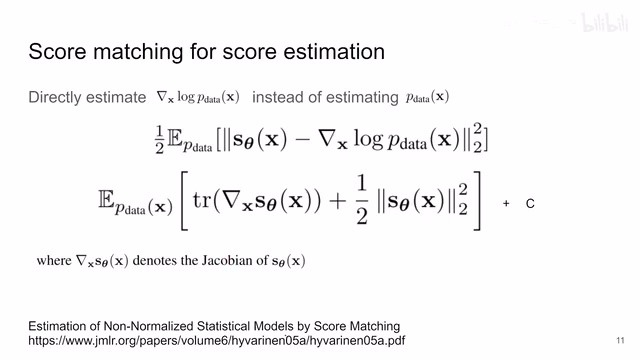
00:03:18–00:03:39 · 画面 010但是其实这个式子跟本文关系并不是非常的密切，作者这里提这个式子是因为后面他要卖一下自己的一篇论文，我们之后提到的时候再看。那么现在这个阶段我们就知道，我们用一个网络去拟合这样一个 score function 就可以了。那么然后我们就可以开始训练了对吧。
00:03:39–00:04:20 · 画面 011
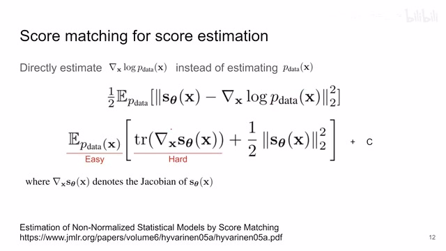
00:03:39–00:04:20 · 画面 011那么在实际你开始训练的时候,你会发现马上一个问题就是,我们如果按照这个 DataSet 来走的话,我们只能够知道说这一个具体的 DataPoint,比如说 X 这个地方,它这个地方,我知道它的 Density 是一个值,那么其他的稍微离 X 远一点的地方,它就没有样本,没有东西去支撑这个网络。那这样你的网络训练下来呢，就非常容易 overfit，只对这几个特定的样本它有一个正确的估计，其他的地方甚至离这个样本很近的地方都没有一个好的估计，那它的数值可能就飘到不知道哪里去了，对吧？这个不是我们希望看到的。因此呢，为了解决这样一个问题呢，在之前呢，人们提出说这个 denoising score matching，它怎么意思呢？就是说我现在有的这个样本对吧，我给它加一些这个噪声，加一些小的扰动。
00:04:20–00:05:13 · 画面 012
00:04:20–00:05:13 · 画面 012就是把我们原有的数据的 distribution 变成一个有噪声的版本那么你用有噪声的版本去训练 score matching 这样子就相当于把每一个真实样本周围的这一小片空间给它支撑起来了也就是说当你噪声加的不是特别离谱的时候你在真实的样本这一圈周围都有这种 noisy 的样本来支撑那么这个网络呢，就更不容易 overfit。但是这么好的东西，它代价是什么呢？就是你家的这个噪声啊，它不能加太大。
你加的太大之后呢，你学出来这个 score function 就变成你加的这个 noise 的这个 score function 了。而如果这个 noise 加的很小呢，和不加有没有区别？所以这个地方呢，是一个需要权衡的地方。那既然作者对这个方法不满意呢，他就提出了说啊，他之前有一篇论文是用了之前的那个近似，然后呢，为了解这个加克比矩阵呢，他的这个 g 作者用这个 random projections。
00:05:13–00:05:54 · 画面 013
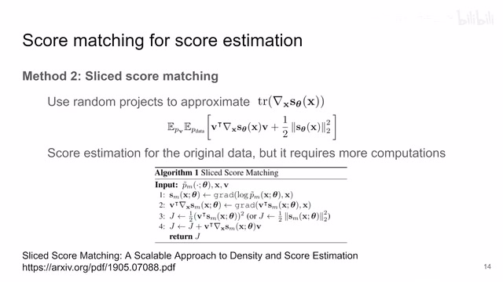
00:05:13–00:05:54 · 画面 013就相当于这个 V 呢，是一个 random vector 嘛，你把这个矩阵呢投影到这个 random vector 上。那么这样做的好处呢，就是你一直在使用这个原始的这个 data distribution，你一直在估计这个原始的 data distribution 它的这个 score。但是呢，你如果看它的算法流程需要求很多次导数，那这类方法叫做 slice score matching。那么如果你对这类方法感兴趣的，你可以看作者之前的这篇文章。那么总之呢，到这里呢，我们有两种方法，一种是 denoising 的方法，一种是这个 slice score matching 的方法，能够把这个 score function 给它解出来。那解出来之后对吧，我们就可以高高兴兴的用上朗之万了，对不对？但是但是现实中呢，没有这么好的事情。那作者发现说呢，假如说我真的使用原始的数据不加任何的这个 noise 称出来这个结果呢，你可以看到它这个 loss 呢始终不下降，也就是说我学出来这个网络呢始终它不像这个 score function。
00:05:54–00:05:56 · 画面 014
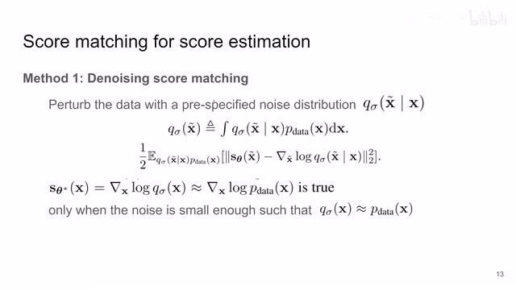
00:05:54–00:05:56 · 画面 01400:05:56–00:06:07 · 画面 015
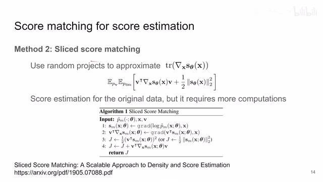
00:05:56–00:06:07 · 画面 01500:06:07–00:07:10 · 画面 016
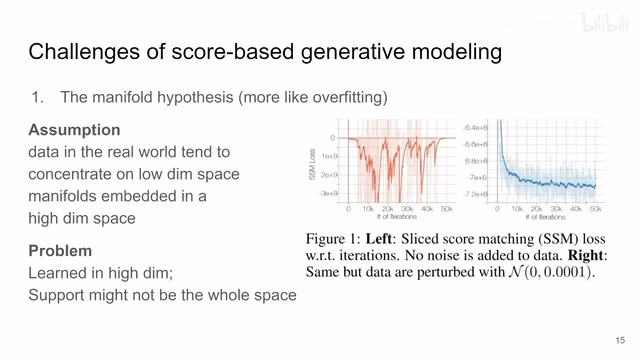
00:06:07–00:07:10 · 画面 016那相比之下，如果我加非常小的一点噪声，你可以看到这里加这个小数点后面多少位了，加非常小的这样一点噪声，那么它就能够帮助我们稳定这个训练的过程，你可以看到这个网络是逐渐收敛，这个 loss 是收敛到一个程度了。那么针对此呢，作者说是这个 manifold hypothesis 嘛，对吧？就是说还是你的这个样本虽然在我们高维的空间上，就是像素这个空间上它是看起来大家都没有什么关系的，假如说你给它抽象的更低的维度，实际上它们是可以这些样本呢实际上是连在一个 manifold 上的嘛，实际上它们是相互关联的。
那么加上这一点噪声就相当于把每一个孤立的点之间的距离给它填平了，如果你不加这点噪声，它们始终在 manifold 上面还是孤立的点，这是一个假设。
00:07:10–00:08:21 · 画面 017
00:07:10–00:08:21 · 画面 017那么第二个原因就是这个 low data density regions。之前我们提到这个 manifold 的问题。就是它们之间的距离。这个 gap 应该怎么填那就相当于这个图里面。这两个区域是样本比较集中的区域。对吧在这两个区域里面。上一页我们说的是。这两个区域里面它们各个样本之间的距离。我们应该怎么样给它。这个 gap 给它抹平那么在这一页说的。
就是我们如果走出这两个区域里面。因为我们在做生成模型的时候。我们从随机的造生开始。那么这个造生跟真实的图像的分布。实在是差得太远了。对吧我们没有这样离谱的样本。来去让我们学一个好的 density function。去学一个 score function你可以看到这样是我们一个 ground truth。这个箭头就是我们的 density 的梯度的方向。
我们的训练样本主要集中在这里和这里。对吧这边的训练样本是很少的。如果我们按照这样的样本来训练。我们会看到我们学出来的方式。可能是这个样子的你可以看到这边这些有样本的地方我们学出来的东西还是相对靠谱的这边这些没有样本比较少的地方对吧
00:08:21–00:08:22 · 画面 018
00:08:21–00:08:22 · 画面 018学出来的
00:08:22–00:08:49 · 画面 019
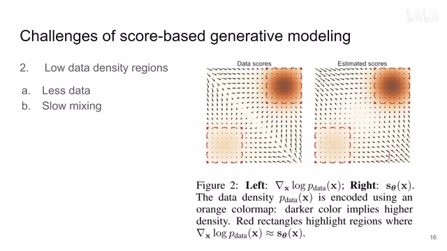
00:08:22–00:08:49 · 画面 019学出来的这个 score 就比较离谱了，那这就会导致当你的样本一开始还是随机噪声的时候，对吧？它可能出生在就在这个位置或这种位置，它在最需要引导的时候，结果你的引导是因为数据不足而都是比较离谱的一些引导，所以这就会导致我们最终这个样本会去到一个很奇怪的地方，它不是一个真实的图像，它不能够反映我们真实的这个数据的 distribution，那么这个是第二个挑战
00:08:49–00:09:35 · 画面 020
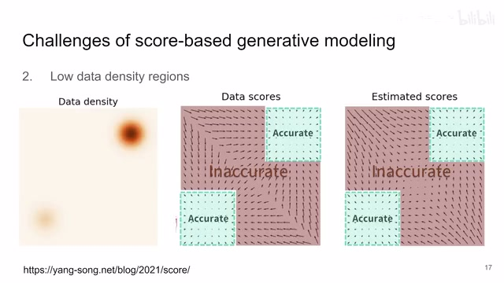
00:08:49–00:09:35 · 画面 020那么这个图呢，更详细的展示了，对吧？这边这个区域因为我们的样本数量比较少，所以呢它没法估计一个准确的 score，那么所以呢作者要想办法解决这个问题，那其实说到底呢，就是因为说我的数据，对吧？就是在这些数据密度高的地方，那为什么叫它数据密度高呢？对吧？因为这里数据多呀，我们缺乏这种数据密度低的地方的它的这个数据，对吧？是说了跟没说一样那么我们该怎么办呢？很简单，就是我们只要生成一些在这些区域的样本就好了，那怎么生成呢？在我们原来的这些样本的真实的样本的基础上加噪声，加了噪声之后我们的样本就逐渐变得离谱了，离谱起来了，它可能就远离我们的真实的 distribution 了
00:09:35–00:10:30 · 画面 021
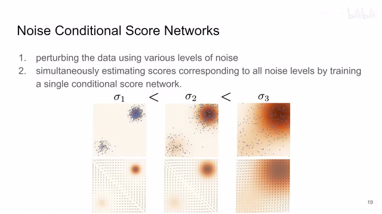
00:09:35–00:10:30 · 画面 021那这里呢，作者就提出了这个 noise conditional score networks，这个 ncsn 啊，他呢就是你原始的这个 distribution，对吧？我加一点噪声，我的这个样本他的这个位置在这个 distribution 中的位置，对吧？他就应该更加离谱一点了，啊对吧？就开始逐渐的扩散到整个这个 distribution 上了，那随着我不断增加我噪声的这个强度那最终呢，你看到我们这个样本就覆盖整个这个空间了，那这样下来你的 score 方式的监督信号也有了，是一个非常巧妙的方法让样本扩散到整个这个空间，那这里呢，作者取的设计呢，是我这里有不同的这个 sigma 嘛，对吧？加不同程度的这个噪声，那作者呢用一个网络同时去估计所有的这些噪声的这个 level
就是一个 score network，它不仅需要以当前的这个位置的坐标作为输入，同时呢它还需要噪声的强度，它会最终呢它会返回给你一个 score，那具体来说呢就是假如说你现在构建一个噪声的这个强度的序列啊，你看这是一个等比数列，σ1 比上σ2 等于σ2 比上σ3，这个σ1 呢是最强的那个噪声的级别
00:10:30–00:12:12 · 画面 022
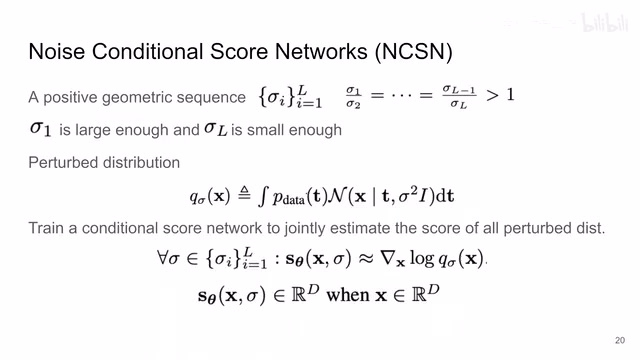
00:10:30–00:12:12 · 画面 022你希望它足够强，这样子呢你这个加噪后的样本呢能够分布在整个这个空间上，也就是说你无论从哪里都能够有样本去支撑我们这个 score function 的这个学习的训练，然后呢这个 sigma l 呢你希望它足够小，那足够小呢就意味着你这个加噪后的这个 distribution 跟我们实际的这个数据的 distribution 它的分布呢区别不是很大，这也就意味着你学出来的这个 score function 呢是真正接近于我们 data distribution 的所以很重要的一点就是所有的这些学习都是使用一个网络来完成的，所以你可以把它理解为之前的 denoising score matching 的扩展，只不过之前的方法是只加了一步的噪声就结束了，这里我们会加很多步的噪声，在没有样本的时候我们去学噪声的 score，在样本比较多的时候我们去学真正的样本的 distributiontolerance score
这个就是本文设计最核心的地方，当然你看到它的表述跟之前都是一样的，原始的数据是这里，使用的是高斯 distribution，加的是高斯噪声，然后得到了这样一个 distribution，对吧？然后你可以通过 Sigma 来控制你的噪声的强度，然后在这样一些样本的基础上你去学一个 score function，这个 score 里面对吧，它不仅要拿到当前的样本的位置同时呢也在知道你要查询是什么程度的这个噪声等级下的这个 score，那么这个呢就是本文的一个表述，那下面我们就来看怎么训练它对吧
00:12:12–00:12:13 · 画面 023
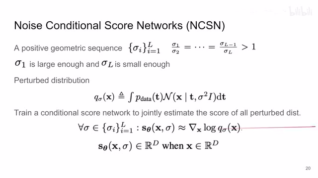
00:12:12–00:12:13 · 画面 02300:12:13–00:12:18 · 画面 024
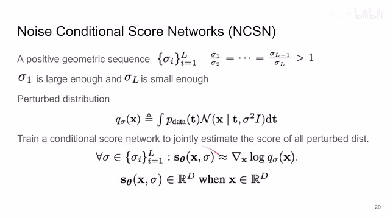
00:12:13–00:12:18 · 画面 024这里作者还是用了 denoising score match 的思路，你可以看到这是我们加噪之后的 distribution，它的 score 很明显根据我们加的噪声是一个 normal distribution，你取上 log 对 x tilde 求导数，它就是我们 score 的 ground truth，然后对一个特定的 sigma 来说，就是对一个特定的 noise level 来说，你的 loss 就是一个 mse，这是你的网络的输出，这是你的 target
00:12:18–00:12:52 · 画面 025
00:12:18–00:12:52 · 画面 025那么它所在的期望呢，首先是对所有的样本，然后每一个样本呢加上一个高深的这个噪声对吧，那么这个呢是对于一个特定的 sigma 它的这个 loss，那我们之前也说了，我们需要的网络去同时学习不同程度的噪声等级，一个网络去学习所有的等级，那这里就很简单了，你把不同的这个噪声的这个等级给它加权加起来就好了嘛，你这个加权这个权重的系数选多少呢
00:12:52–00:12:53 · 画面 026
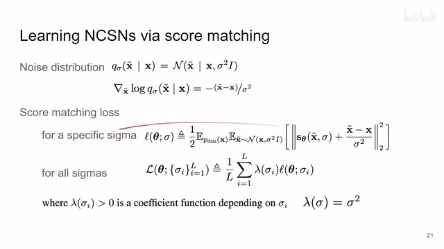
00:12:52–00:12:53 · 画面 02600:12:53–00:13:18 · 画面 027
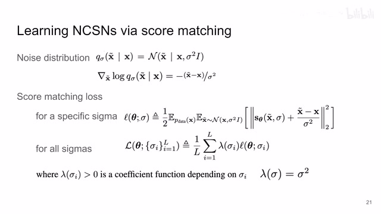
00:12:53–00:13:18 · 画面 027这里呢作者发现说 OK，我设置成这个值就是噪声等级的这个平方，它呢是能够达到一个让人满意的效果，那具体为什么选它呢，对吧，作者发现说当我真正把这个网络训练完之后，我们最终出来这个 score function 呢，它跟这个 score 的这个它的这个数量级呢，跟我们这个噪声的等级的这个倒数是一个正相关的关系
00:13:18–00:13:42 · 画面 028
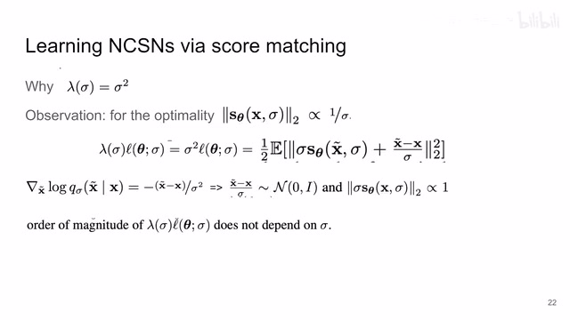
00:13:18–00:13:42 · 画面 028那这样子呢，你如果在训练的时候呢，让这个 lambda 等于这个 sigma 的平方，你可以打开你发现什么呢，对吧，把我们这个平方 set 到这个平方向这个期望的平方向里面，你可以看到呢，它里面呢变成了这样一项
00:13:42–00:13:43 · 画面 029
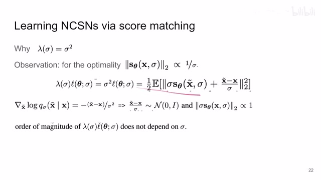
00:13:42–00:13:43 · 画面 02900:13:43–00:14:07 · 画面 030
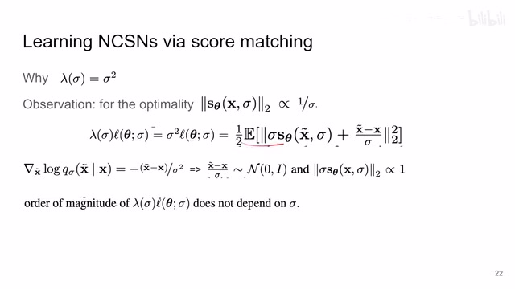
00:13:43–00:14:07 · 画面 030那我们知道 Xtelda 是根据 X 加高适 noise 来采样出来的，相当于是在这个 X 一个固定的均值上面加了一个标准 X 是 sigma 的这么一个高适 noise 对吧，你现在把这个 X 这个均值给它减去减回去了，然后呢把这个标准 X 再给它一除，那你这一项出来它不就是一个标准的一个正态分布吗，所以它的这个期望的值跟我们的这个 sigma 是没有关系的
00:14:07–00:14:08 · 画面 031
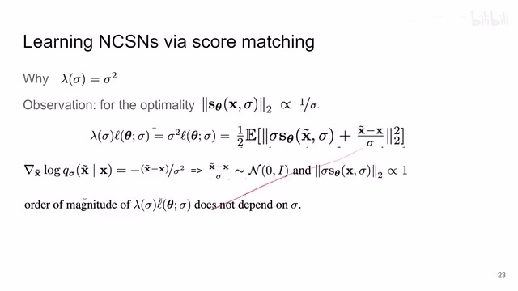
00:14:07–00:14:08 · 画面 03100:14:08–00:14:20 · 画面 032
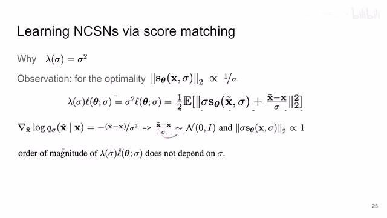
00:14:08–00:14:20 · 画面 032同时你再看这一项就更直接了，我们之前说的我们观察到了当训练好的时候有这么一个性质对吧，我再乘上这个 sigma 把这乘上来，那就相当于这一项 sigma 乘以这个 score function 这个东西它的这个尺度是相对的一个常数
00:14:20–00:14:21 · 画面 033
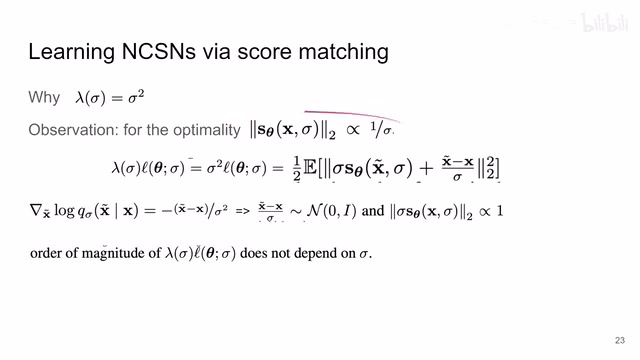
00:14:20–00:14:21 · 画面 03300:14:21–00:14:41 · 画面 034
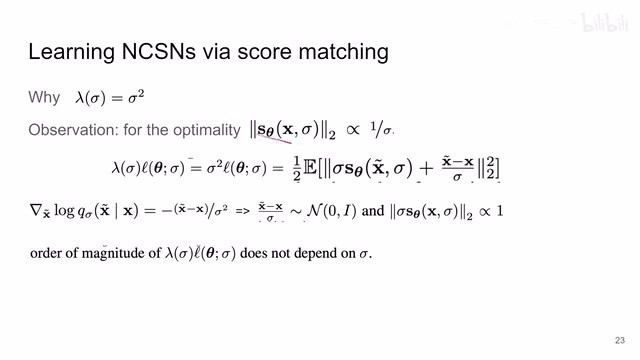
00:14:21–00:14:41 · 画面 034所以再一次的这实现了一个闭环而选这个 lambda 是这个 sigma 平方它的原因就是因为在这样一种解释的情况下我们的整个的这个 loss 项并不会因为 sigma 而变换自己的数量级也就是使我们能够在不同的 noise level 上的这个样本上均匀的把我们这个网络训练好就大家都差不多大家都一样这样的感觉
00:14:41–00:14:42 · 画面 035
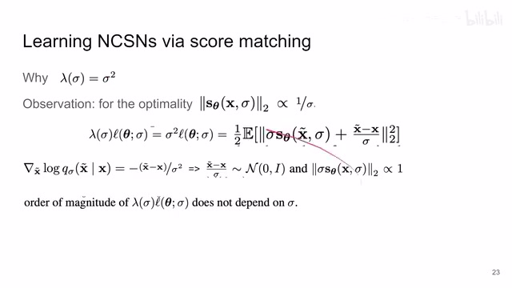
00:14:41–00:14:42 · 画面 03500:14:42–00:15:01 · 画面 036
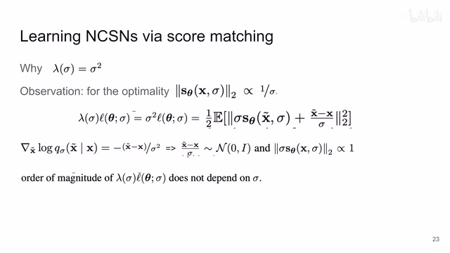
00:14:42–00:15:01 · 画面 036那么这个呢是为什么选这个 lambda 等于这个 sigma 的平方那么训练的问题解决了我们最后来看一下这个推断的时候那这里呢作者使用的是退火朗之万具体来说呢就是你看这是一个标准朗之万嘛对吧它每前进一步的这个步长是由这个 epsilon 来决定的那退火就意味着一开始这个 epsilon 它可能很大那么后来呢它就逐渐逐渐的变小了那作者有实验证明说这样子呢能够控制我们的这个 distribution 的分布
00:15:01–00:16:01 · 画面 037
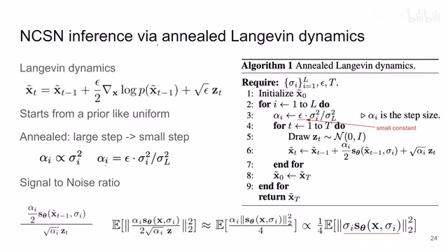
00:15:01–00:16:01 · 画面 037跟真实的这个 Distribution 更加契合，那具体这个退伙应该怎么做呢，你来看我们比如说从这个 Uniform 的这个噪声开始，我们这里起手一个 X0Telda然后呢因为我们有 L 个不同的噪声等级，我们从最高的噪声等级也就是这个 I 等于 1 的时候这个σ1 的时候开始，这个时候呢我算一个这个步长，这个α1α1 等于这个ε这是一个小的一个常数乘上这个σ1 除以σL 它的这个平方，那么这样算出来一个α呢它就是我们的一个步长，我们使用这个步长呢来作为我们朗之万这里的这个步长
00:16:01–00:16:02 · 画面 038
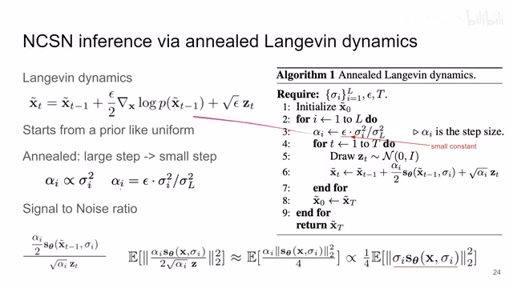
00:16:01–00:16:02 · 画面 03800:16:02–00:17:16 · 画面 039
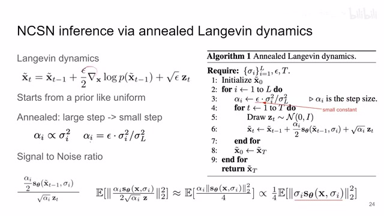
00:16:02–00:17:16 · 画面 039你就用αi 这个步长做几步朗之万的这个更新，然后呢更新的差不多了，你把这个 i 改到 2 对吧，降到于这个步长变小了一点，然后呢你再去做，那你最后呢取到这个 L 的时候对吧，这个步长呢就非常小了，这是作者说的这个退火的过程那本质上就是一开始朗芝万更新的步子比较大后来比较小就是这样你可以看到呢这个步长呢它是正比于这个 Sigma i 的平方的那还是为什么选这个步长呢作者说这里能够帮助我们控制这个心脏比也就是我们在做朗芝万过程中真正的信号的强度和后面这个 random noise 这个噪声的强度对吧它们两个的比例我们来看到对吧它们两个比例这个比出来就是这样子的然后这个心脏比它的这个平方的期望对吧
然后你可以带进来写出来那就是这个样子而当你这个αi 正比于这个σi 平方的时候呢对吧你就把它替换成σ的平方你然后把这个平方向拉进来拉到这个平方向里面你发现这里面这一项之前我们说了如果它优化的好的话它是一个常数那么这就又套回到原来的这些观察里面了所以呢这一作者选择这样一个这个退火的这个方式呢就是为了保持这个心脏比它的这个尺度是相对稳定那么这个呢就是退火导致万的过程也就是本文的核心的算法了
00:17:16–00:17:18 · 画面 040
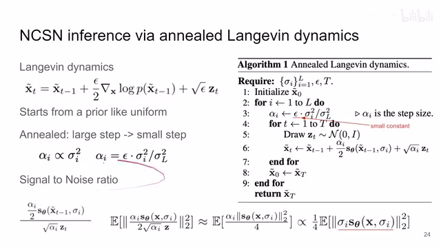
00:17:16–00:17:18 · 画面 04000:17:18–00:17:27 · 画面 041
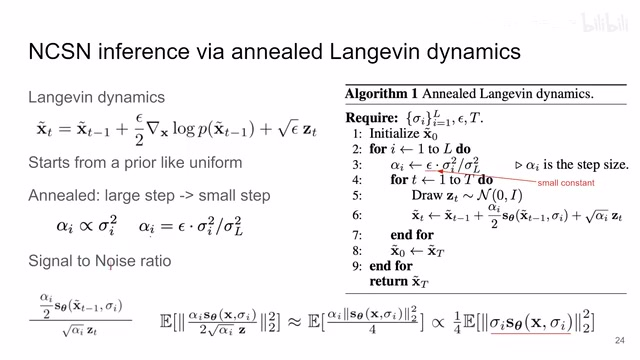
00:17:18–00:17:27 · 画面 041好的那么我们下面来快速的看一眼结果对吧一些美丽的数字一些样本的展示还是感兴趣的朋友呢非常推荐你去看他的原文的各种实验那么总结来说呢这一篇是和 DDPM 同期的一个工作他们背后的原理呢其实是等效的那这一篇的行文呢也是非常流畅很有意思的一篇工作好的那么以上就是我对这篇文章的一个快速的整理那么感谢您的收看再见
00:17:27–00:17:51 · 画面 042
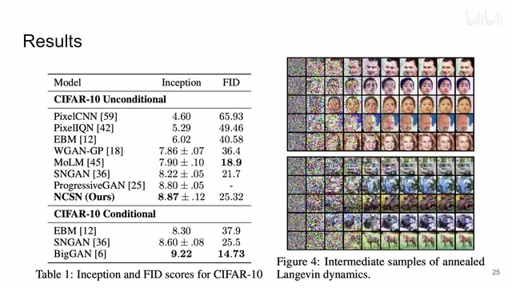
00:17:27–00:17:51 · 画面 04200:17:51–00:17:51 · 画面 043
00:17:51–00:17:51 · 画面 043转写与来源说明 · 0 个自动复核提示
保留 84 个原始语音片段，0 个片段触发自动复核提示。提示仅用于定位可能的术语、重复或识别问题，不等于已确认错误。
讲解画面为源视频截图（640×360），不是可编辑 PPT 文件。全片按每秒 2 帧扫描内容变化，逐步展开页保留；连续动画保留代表画面。清晰度受源视频限制。
原视频：paper/合集_2026-10-16_表征学习/[论文速览]Generative Modeling by Estimating Gradients of the Data Dist[1907.05600].mp4
SHA-256：5bec55618b5f2b229fafe66cf372ae19631268ac2a3d875d19935f2da47214d9
全文按视频语音与画面制作。原论文可从上方链接下载；完整资料包保留全文、原始逐字稿、字幕和校对记录。